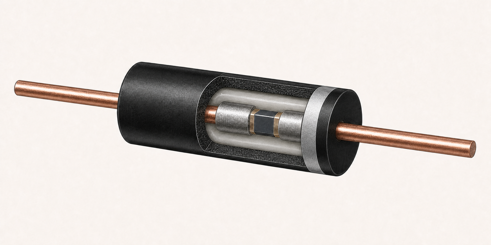

Read the I–V curve, then inspect the internal physics
Start from current and operating region; use the barrier, carriers, and bands to explain their physical origin.
Select the operating condition and solve the coupled transport equations.

Documented construction
Realistic reconstruction of the documented Vishay GP/RGP/EGP cross-section. Dimensions are illustrative.
Model boundary: the solver represents an idealized abrupt PN junction, not this package or its proprietary die geometry.
Start from current and operating region; use the barrier, carriers, and bands to explain their physical origin.
Each of the 67 voltage points must converge independently before the curve is presented as valid.
Bounded model: 1D silicon, Boltzmann statistics, constant mobility, and SRH. Avalanche, tunneling, degeneracy, Auger, and bandgap narrowing are not included.